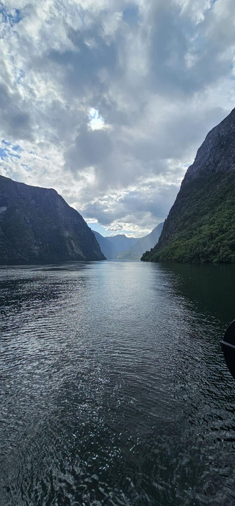
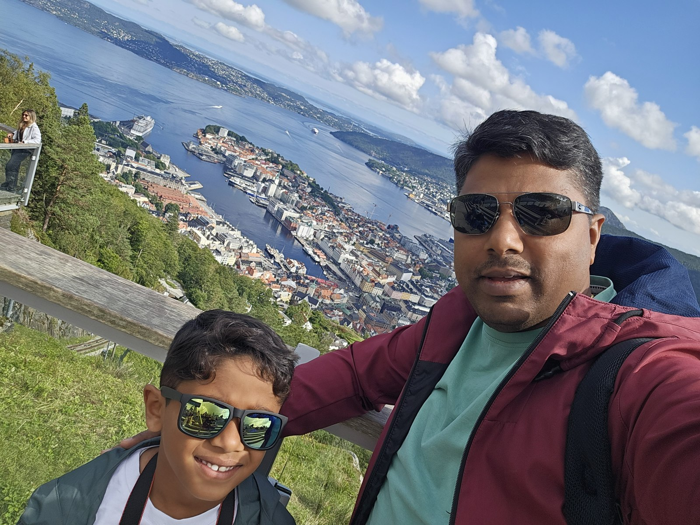

A journey told through the window
Every journey has moments that pass in a few seconds: a tram crossing a street, a harbour coming into view, water trailing behind a boat. On this trip, I began collecting those moments through the window and on my phone. Together they tell the story of a family journey across Denmark, Norway, Sweden and Finland.
Between 14 and 25 August 2026, the route took me from London to Copenhagen, across the water to Oslo, through Norway’s mountains and fjords to Bergen, and onwards to Sweden and Helsinki. The clips became Window Seat Journeys; this is the longer story behind them.
01 / Denmark · 14–17 August
London to Copenhagen, then time with family
The trip began with an evening flight from Heathrow to Copenhagen on 14 August. From the airport, the first part of the journey led towards family: a stay with relatives in the Dalby/Haslev area before the next stage took us across the water.
On 17 August, Copenhagen became the departure point for our overnight ferry to Oslo. The crossing was both a way to reach Norway and a night of the holiday in its own right, with a family cabin for the journey.
The overnight crossing
The DFDS crossing in my itinerary departed Copenhagen at 16:30 on 17 August and arrived in Oslo at 10:00 on 18 August. The family cabin meant the night itself formed part of the journey, with arrival in Norway the following morning.
02 / Norway · 18 August
A city day in Oslo
After the ferry arrival, Oslo was my first Norwegian city stop. I stayed at Scandic St. Olavs Plass for the night of 18 August, before the early train departure the next morning.
The Oslo footage records a city seen in motion: tram tracks and overhead wires, cyclists at crossings, modern waterfront buildings, street-side cafés and apartment balconies. The Bjørvika and Opera House area gives some of the clips their distinctive angular architecture. Other street views remain deliberately described at city level where the exact road is not established.
03 / Norway · 19 August
Oslo to Bergen, the scenic way
The most ambitious travel day started at Oslo Central Station at 06:25. By evening, the plan would take us to Bergen via mountain railways, a fjord cruise and a bus. It was a day built around the journey itself.
The route unfolded one connection at a time: the Bergen Railway to Myrdal, the Flåm Railway down to Flåm, the waterway to Gudvangen, then the road to Voss and a final train to Bergen.
| Leg | How I travelled | Recorded itinerary |
|---|---|---|
| Oslo → Myrdal | Bergen Railway, F4 train | Depart Oslo 06:25 |
| Myrdal → Flåm | Flåm Railway, R45 | 12:06–13:04 |
| Flåm → Gudvangen | Fjord cruise | 15:00–17:00 |
| Gudvangen → Voss | VY456 bus | Depart 17:15 |
| Voss → Bergen | R40 train | 19:14–20:38 |
These are the timings recorded for my August 2026 itinerary, not current timetables. Arrival times are not a live service guarantee.
Myrdal, the Flåm Railway and Kjosfossen
At Myrdal, I changed onto the Flåm Railway. One stop appears in my video: Kjosfossen, where the waterfall and viewing platform made a memorable pause on the route down towards Flåm.

Flåm harbour to Gudvangen
In Flåm, railway tracks gave way to the harbour, boats and a mountain backdrop. From there we continued by boat towards Gudvangen. My footage catches the view along the fjord: steep mountain sides, water, waterfalls and the wake trailing behind us.
For close-up water and waterfall clips, I use the cruise route as the location rather than claiming a precise point on the fjord. After Gudvangen, the bus to Voss and train to Bergen completed the day.
04 / Norway · 19–20 August
Bergen from the street—and above it
The final train brought me into Bergen on the evening of 19 August, and I stayed at Hotel No13. The following day I saw the city from two perspectives: at street level and from above, after a ride on Fløibanen to Mount Fløyen.
The red and blue funicular carriages, stepped station platforms and tunnel appear across several Shorts. Looking down the tracks gives a different sense of the city: the harbour and buildings sit below, framed by the green hillside. The lookout footage opens out into the wider Bergen panorama.
Other Bergen clips capture a bakery counter, roadside greenery and city streets through the window. I have kept those descriptions to what the footage shows rather than adding unrecorded restaurant names or hotel experiences.

On 20 August I flew from Bergen Flesland to Stockholm Arlanda on Norwegian flight DY842, recorded as departing at 19:35 and arriving at 20:55. The airport clips form the transition between the Norwegian scenery and the Sweden part of the trip.
05 / Sweden · 20–24 August
Stockholm views and a family base in Uppsala
After the flight to Stockholm Arlanda, the journey changed pace again. Uppsala was our family base, with time in Stockholm as well. It brought together the city views I was filming and the family time that was an important part of the trip.
The Stockholm waterfront clip looks across the water towards the skyline. Other Swedish clips show a blue passenger train, quiet street corners, crossings, colourful buildings and balconies. Some of these scenes do not establish whether the camera was in Stockholm or Uppsala, so I do not attach an exact city or street to them.
My next confirmed long-distance connection was the early flight from Stockholm Arlanda to Helsinki on 24 August. The precise local transfers between Uppsala, Stockholm and the airport are not recorded here as completed journeys, so this account does not invent a train line or taxi ride.
06 / Finland · 24–25 August
Helsinki for the final city stop
On 24 August I flew from Stockholm Arlanda to Helsinki Vantaa on Norwegian flight D82603. The recorded departure was 07:35, arriving at 09:30 local time. Helsinki became the final overnight stop before the journey back to London.
The landmark footage includes Helsinki Cathedral at Senate Square and Helsinki Central Railway Station. The cathedral’s columns and the station’s copper-green tower give these clips identifiable locations. The cathedral address is Unioninkatu 29, while the station faces Kaivokatu, with its address at Kaivokatu 1.
There are also railway and underground-platform views from the Helsinki-region leg. The exact station and track section are not established in every clip, so those remain regional travel views rather than precise station guides.
On 25 August, the flight from Helsinki to Heathrow brought the journey back to London. The route was complete, but the small scenes remained: a waterfall stop, a boat wake between mountains, the tracks above Bergen and all those city views from the window.
The overnight stops
Where I stayed
| Dates / nights | Place | Accommodation |
|---|---|---|
| 14–16 August nights | Dalby/Haslev, Denmark | With relatives |
| 17 August night | Copenhagen → Oslo | Family cabin on the overnight ferry |
| 18–19 August | Oslo, Norway | Scandic St. Olavs Plass |
| 19–20 August | Bergen, Norway | Hotel No13 |
| 20–23 August nights | Uppsala, Sweden | With family |
| 24–25 August | Helsinki, Finland | Overnight city stop; the planned hotel name needs final confirmation |
Hotel names are included as trip details, without invented ratings, room descriptions, prices or service reviews.
The practical record
From where to where
| Date | From → to | Transport |
|---|---|---|
| 14 August | London Heathrow → Copenhagen | Flight |
| 17–18 August | Copenhagen → Oslo | DFDS overnight ferry |
| 19 August | Oslo → Myrdal → Flåm | Bergen Railway + Flåm Railway |
| 19 August | Flåm → Gudvangen | Fjord cruise |
| 19 August | Gudvangen → Voss → Bergen | Bus + train |
| 20 August | Bergen → Stockholm Arlanda | Norwegian DY842 flight |
| 20–24 August | Uppsala base + Stockholm visits | Local transfer details not confirmed |
| 24 August | Stockholm Arlanda → Helsinki Vantaa | Norwegian D82603 flight |
| 25 August | Helsinki → London Heathrow | Finnair AY1335 flight |
The early departure from Oslo and the sequence of timed connections made 19 August the day that needed the most planning. Anyone recreating a similar route should use current operator information rather than copying these historical departure times.
See the places
Small moments from the route
The Shorts are simple travel records: a view from a seat, a station platform, a landmark seen from below. These three clips connect directly to places in this story.
Route and place references
This account combines my recorded itinerary with the travel footage. Exact streets and local transfers are included only where established. Public references for the named landmarks and route: